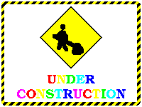
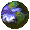

 Under Construction
Under Construction-skiltet, et typisk indslag på 1990'ernes hjemmesider. |
NEW!
Blinkende NEW!-skilt, et typisk element på 1990'ernes hjemmesider. |
 Drejende globus
Lille drejende globus, typisk ikon på 1990'ernes hjemmesider. |
 Drejende jordklode
Drejende jordklode, et klassisk webmaster-motiv fra 1990'ernes net. |
 You've Got Mail
AOLs »You've Got Mail«-besked, kendt fra 1990'ernes indbakke. |
 AOL-opkald
AOLs opkaldsskærm med den løbende figur, 1990'ernes internet. |
 Dancing Baby
Dancing Baby (Baby Cha-Cha), 1996, lavet af Michael Girard og Robert Lurye. |
 Dansende skelet
Dansende skelet, et typisk indslag på 1990'ernes Halloween-hjemmesider. |
 Peanut Butter Jelly Time
Den dansende banan (Peanut Butter Jelly Time), tegnet af Trym Stene i 1999. |
 All Your Base
»All Your Base Are Belong To Us« fra spillet Zero Wing, memet blev stort i 2001. |
 Keyboard Cat
Keyboard Cat, Charlie Schmidts kat Fatso, lagt på YouTube i 2007. |
 Dramatic Chipmunk
Dramatic Chipmunk (egentlig en præriehund), viralt på YouTube i juni 2007. |
 Rickroll
Rickroll: Rick Astleys »Never Gonna Give You Up« (1987), memet opstod i 2007. |
 MJ Popcorn
Michael Jackson spiser popcorn i musikvideoen til Thriller (1983). |
 Nyan Cat
Nyan Cat (Pop-Tart Cat), lavet af Christopher Torres i april 2011. |
 Deal With It
Deal With It-solbrillerne, et internetmeme fra omkring 2010. |
 This Is Fine
»This Is Fine« af KC Green, fra webtegneserien Gunshow i 2013. |
 Homer i hækken
Homer gemmer sig i hækken, fra The Simpsons-afsnittet »Homer Loves Flanders« (1994). |
 Forvirrede Travolta
Forvirrede Travolta, fra filmen Pulp Fiction (1994), memet spredte sig i 2015. |
 Coffin Dance
De dansende ligbærere fra Ghana, et verdensomspændende meme i 2020. |
Kilder: Wikimedia Commons og GIPHY. Tak til alle skaberne!